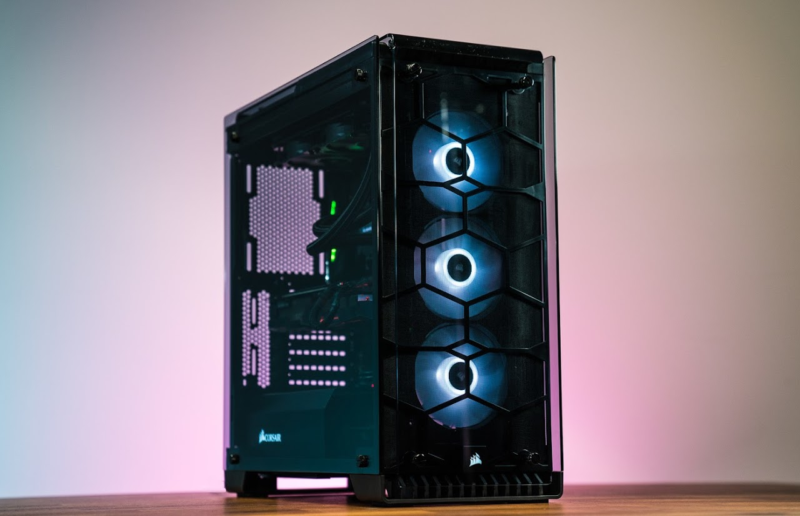

Ever since I was in elementary school, I was interested about technology. I created some simple logistic code in the program scratch when I was little, and got interested in continuing using technology. I hope to learn more about hardware of computers and modern machines. I also hope to learn about software; how software is made and how to use it.
This image emphasis my relationship with computers, I use computers in my daily life to access the internet, complete homework, and entertain myself with games and videos.
My favorite website is Youtube, because it is a very useful tool to find information and entertainment. You can find out new things about almost any topic. Some videos are really symbolic or interesting to me, such as this Video.